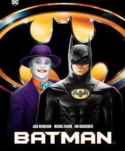
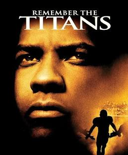
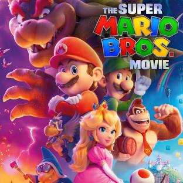

Genre Action/Adventure 2h 6m Rating
Gotham City. Crime boss Carl Grissom (Jack Palance) effectively runs the town but there's a new crime fighter in town - Batman (Michael Keaton). Grissom's right-hand man is Jack Napier (Jack Nicholson), a brutal man who is not entirely sane... After falling out between the two Grissom has Napier set up with the Police and Napier falls to his apparent death in a vat of chemicals. However, he soon reappears as The Joker and starts a reign of terror in Gotham City. Meanwhile, reporter Vicki Vale (Kim Basinger) is in the city to do an article on Batman. She soon starts a relationship with Batman's everyday persona, billionaire Bruce Wayne
Genre Family/Musical 2h 10m Rating
Disney's animated classic takes on a new form, with a widened mythology and an all-star cast. A young Prince, imprisoned in the form of a Beast (Dan Stevens), can be freed only by true love. What may be his only opportunity arrives when he meets Belle (Emma Watson), the only human girl to ever visit the castle since it was enchanted.
Genre Sport/Drama 2h Rating
A high-school football team is forced to integrate, bringing together players from different racial backgrounds. Coach Boone, played by Denzel Washington, takes charge and helps the team overcome their differences and work together. Amid challenges and resistance, the players learn to respect and support one another. Through hard work and determination, they become a united team, overcoming prejudice and achieving success on the field. The movie shows how sports can bring people together and promote understanding, even in the face of adversity.
Genre Family/Comedy 1h 32m Rating
A Brooklyn plumber named Mario travels through the Mushroom Kingdom with a princess named Peach and an anthropomorphic mushroom named Toad to find Mario's brother, Luigi, and to save the world from a ruthless fire-breathing Koopa named Bowser.
Home